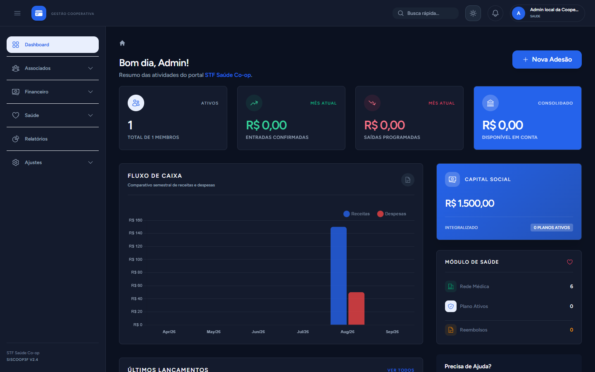
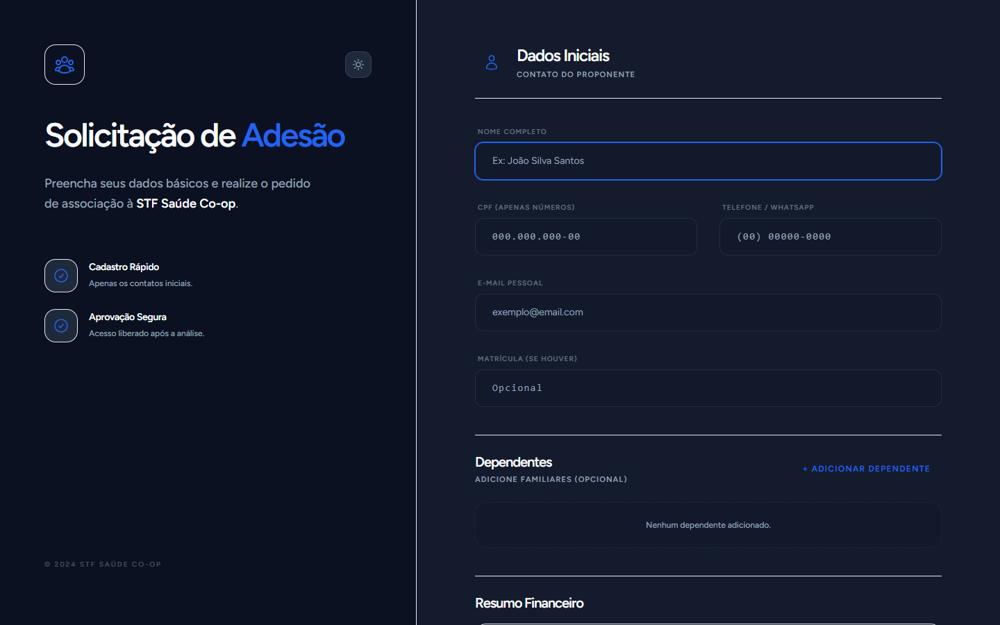
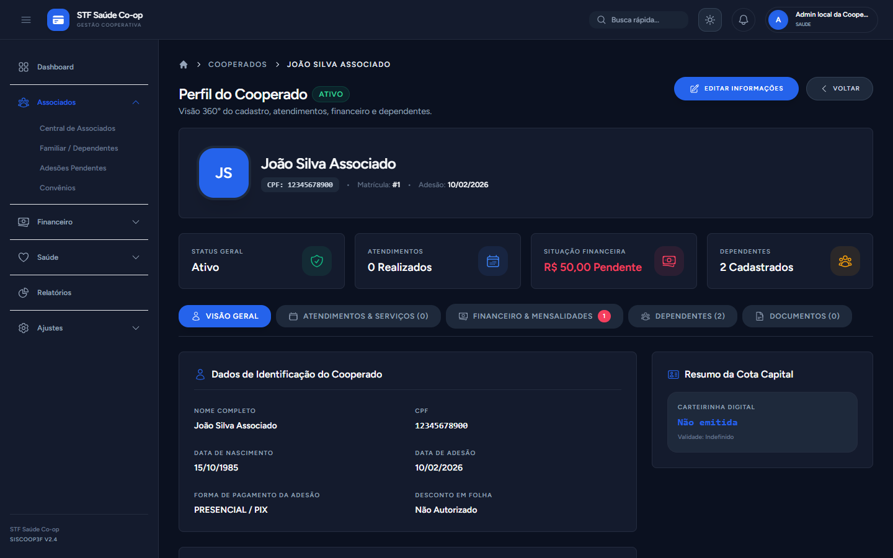
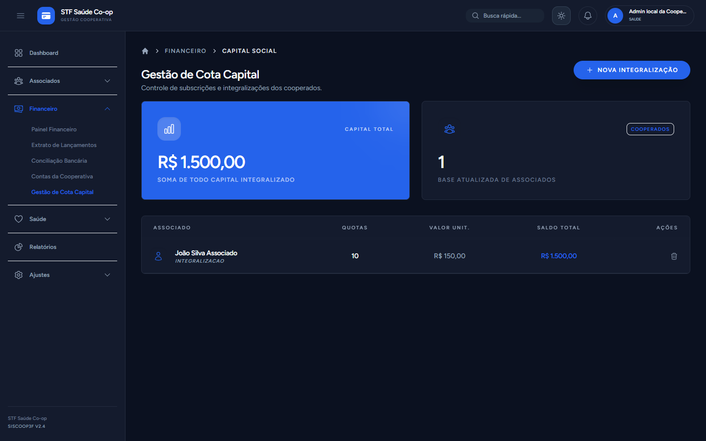
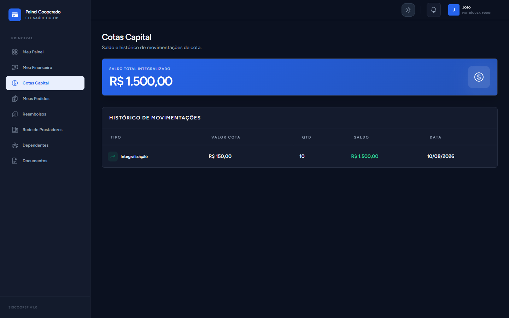
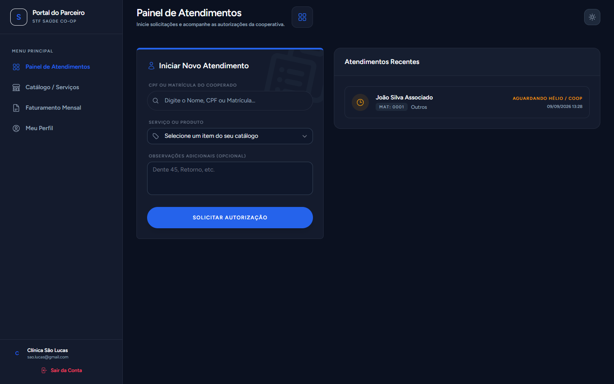
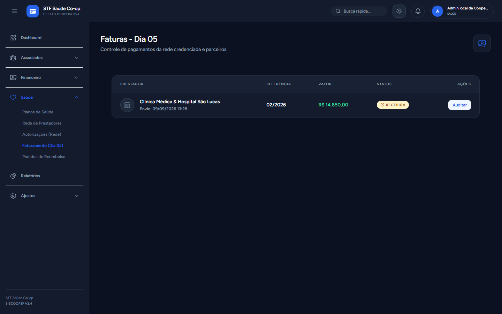
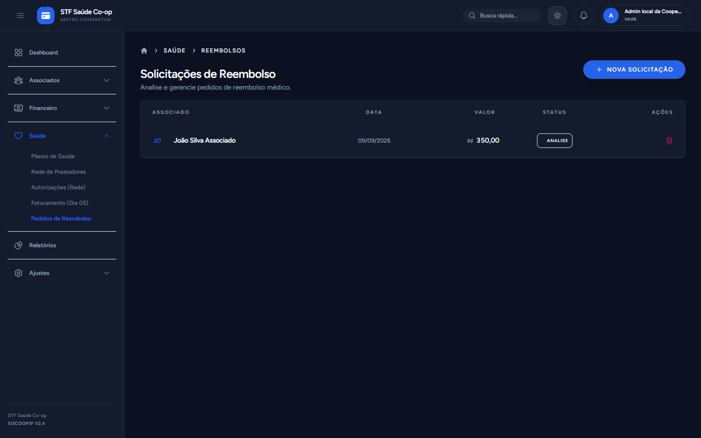
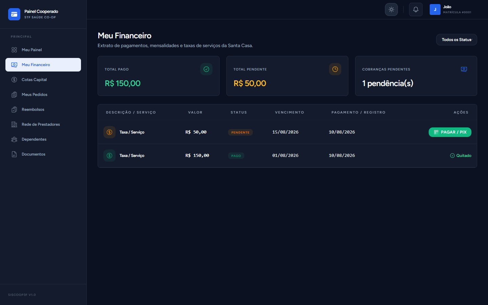
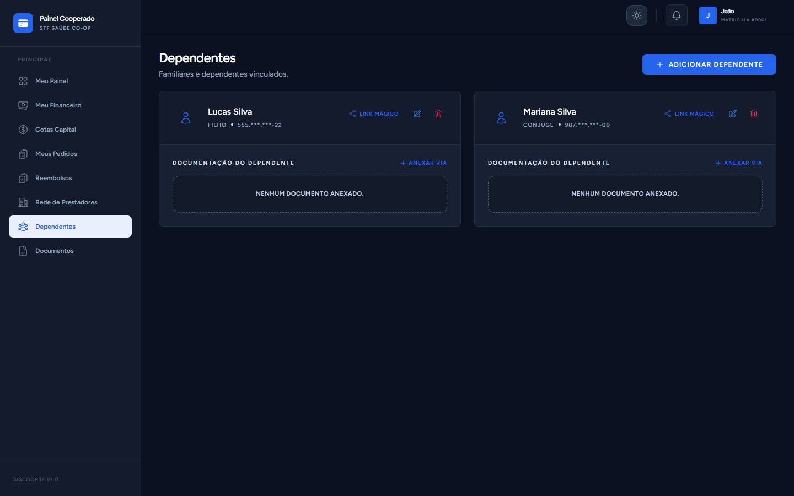

SISCOOP3F
Modernização, Transparência e Controle para a Cooperativa
Uma plataforma unificada projetada para conectar Diretoria, Cooperados, Dependentes e a Rede Credenciada em um ecossistema 100% digital, seguro e financeiramente sustentável.
Cota Capital & Patrimônio
Gestão transparente das quotas de cada associado com extrato em tempo real.
Blindagem & Retorno Financeiro
Redução de até 70% em retrabalho operacional e zeramento de sinistros indevidos.
Link Mágico por CPF
Acesso simplificado para dependentes via 5 dígitos do CPF sem atrito de senhas.
Por Que Modernizar a Gestão da Nossa Cooperativa?
Eliminar o atrito operacional, mitigar riscos de inadimplência e valorizar o patrimônio do associado.
- • Controle disperso em papéis, pastas físicas e planilhas paralelas;
- • Inadimplência silenciosa: cooperados atrasados continuavam usando a rede médica;
- • Dificuldade do associado em acompanhar seu saldo de Cota Capital integralizada;
- • Processo moroso de aprovação e conferência manual de guias e faturas médicas;
- • Sobrecarga no atendimento para envio de 2ª via de boletos e autorizações.
- ✓ Ecossistema 100% digital, automatizado e integrado em tempo real;
- ✓ Trava de segurança: prestador só emite guia se o cooperado estiver estritamente adimplente;
- ✓ Portal exclusivo do associado com visão de Cota Capital e extrato financeiro transparente;
- ✓ Regra do Dia 05: Faturamento automatizado com upload de NF-e e auditoria médica;
- ✓ Autonomia para dependentes com acesso seguro via 5 primeiros dígitos do CPF.
Um Sistema Único, Quatro Experiências Dedicadas
Cada público da cooperativa tem um portal exclusivo adaptado à sua rotina.
Painel Administrativo 360°
- • Fluxo de caixa e saldo bancário;
- • Gestão de Cota Capital e Associados;
- • Auditoria de guias e faturas;
- • Relatórios em Excel com 1 clique.
Portal do Associado
- • Card Meu Patrimônio (Cotas);
- • Extrato com PIX e QR Code;
- • Rede credenciada e convênios;
- • Solicitação de reembolsos médicos.
Portal do Dependente
- • Acesso via Link Mágico por CPF;
- • Zero atrito: sem lembrar senha;
- • Carteirinha virtual própria;
- • Blindagem total das finanças.
Portal do Prestador
- • Busca por CPF/Matrícula;
- • Checagem de adimplência;
- • Abertura digital de autorizações;
- • Envio de faturas até o dia 05.
Visão Estratégica em Tempo Real para a Tomada de Decisão
Todos os números vitais da cooperativa consolidados em uma única tela gerencial.
Patrimônio integralizado auditável em tempo real no banco de dados.
Ativos, dependentes, rede de prestadores e fluxo de autorizações centralizados.

Admissão Digital com Validação Matemática & Perfil 360°
Como novos membros entram na cooperativa de forma segura, sem fraudes e sem papelada.


Gestão do Capital Social & Transparência para o Associado
A Cota Capital é o alicerce financeiro da cooperativa: gestão corporativa e extrato na palma da mão.


Fluxo Invertido: Blindagem Contra Inadimplência
Como o sistema impede o uso indevido da rede por cooperados atrasados e agiliza a autorização de guias.

Faturamento dos Prestadores (Dia 05) & Reembolsos com Coparticipação
Pontualidade no repasse à rede e precisão no cálculo de coparticipações.


Extrato com PIX Imediato & Gestão de Dependentes via Link Mágico
Facilidade para quitar mensalidades e acesso familiar descomplicado sem senhas decoradas.


Privacidade Total Garantida (LGPD):
O dependente não visualiza informações financeiras, extratos de pagamentos ou saldo de Cota Capital do titular.
Onde o Siscoop3F Reduz Custos e Gera Economia Real
Uma análise quantitativa do impacto financeiro direto gerado pela automação da cooperativa.
Fim da Utilização da Rede por Inadimplentes
Em cooperativas convencionais, 5% a 12% dos procedimentos autorizados ocorrem para membros em atraso. A trava automática elimina esse custo no primeiro dia de operação.
Redução Drástica em Suporte e Secretaria
Elimina o tempo gasto com emissão manual de 2ª via de boletos, conferência física de guias de papel e atendimento repetitivo para dependentes com senhas esquecidas.
Carteirinha 100% Digital & Link Mágico
Zera custos de confecção de cartões plásticos de PVC (R$ 8 a R$ 15 cada), reemissão por perda e despesas postais. Cada membro acessa no próprio celular com QR Code.
Automação da Coparticipação em Reembolsos
Garante que a cooperativa nunca deixe de cobrar a coparticipação (ex: 30%) em reembolsos. O sistema gera a conta a pagar e a conta a receber no mesmo clique.
Gestão Tradicional / Planilhas vs. Ecossistema Siscoop3F
Comparativo executivo demonstrando o salto de governança, segurança e qualidade de serviço.
| Critério / Recurso | Modelo Tradicional / Planilhas | Com o Siscoop3F (Ecossistema) |
|---|---|---|
| Controle de Elegibilidade | ✕ Manual ou inexistente. Cooperado atrasado usa e gera custos. | ✓ Trava em milissegundos: bloqueia emissão de guia no ato. |
| Cota Capital & Patrimônio | ✕ Valores esquecidos em balancetes; associado se sente pagando taxa. | ✓ Card 'Meu Patrimônio' transparente no celular; gera consciência de dono. |
| Acesso de Familiares | ✕ Senhas esquecidas geram chamados diários de suporte à cooperativa. | ✓ Link Mágico validado por 5 dígitos do CPF (zero atrito e sem senhas). |
| Faturamento de Clínicas | ✕ Papéis enviados sem data fixa, guias soltas e conferência demorada. | ✓ Regra do Dia 05 com upload de NF-e e auditoria médica integrada. |
| Reembolso & Coparticipação | ✕ Cálculo manual de 30% em planilhas com risco de esquecimento. | ✓ Geração automática dos dois títulos financeiros (pagar e receber). |
| Auditoria & Conselho Fiscal | ✕ Dias montando relatórios manuais para prestar contas em assembleias. | ✓ Exportações oficiais em Excel (.xlsx) completas com 1 clique. |
Segurança, Compliance e o Futuro da Nossa Cooperativa
Tecnologia moderna para posicionar a cooperativa em um novo patamar de excelência.
Isolamento Completo
O banco de dados da cooperativa é 100% isolado das demais entidades. Seus dados patrimoniais e de cooperados pertencem exclusivamente à cooperativa.
Segurança Jurídica
Criptografia de campos sensíveis (CPF e e-mail). Termos de consentimento com registro formal de data/hora para respaldo legal.
Relatórios em Excel
Exportação instantânea de relatórios de associados, financeiro, prestadores e adesões para conferência do Conselho Fiscal e auditorias.
Proposta de Valor para a Diretoria Executiva
Mais controle sobre o fluxo financeiro, zero risco de uso indevido da rede médica por inadimplentes e a satisfação do associado ao ver seu patrimônio em Cota Capital valorizado.